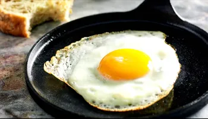

Ingredientes e Utensílios
- 1 Ovo - De preferência caipira para mais sabor.
- 1 colher de chá de manteiga ou azeite - Para dar aquele toque especial.
- Sal e pimenta - A gosto.
- 1 frigideira antiaderente - Essencial para não grudar.
Passo a Passo
- Aqueça a frigideira: Coloque a frigideira em fogo médio e adicione a manteiga ou azeite.
- Quebre o ovo: Com cuidado, quebre o ovo e coloque-o na frigideira.
- Digitar o endereço do site
- Cozinhe a gosto: Fritar por cerca de 2-3 minutos para uma gema mole, ou mais tempo para uma gema mais dura.
- Sirva: Retire o ovo com uma espátula e sirva imediatamente!
